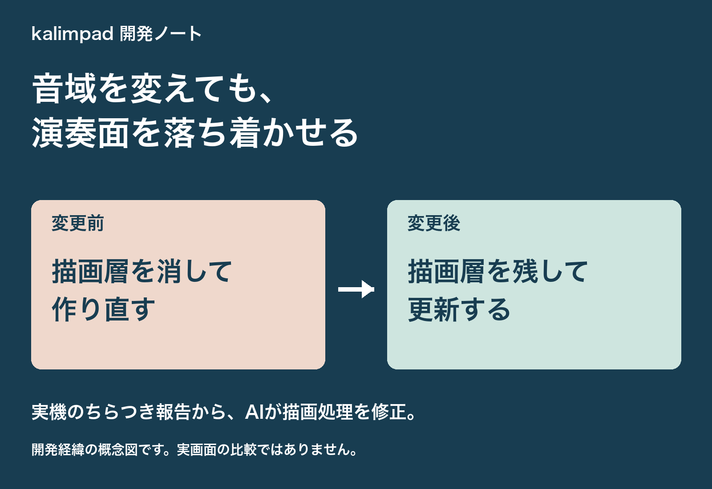

音域変更で気づいた違和感
kalimpadの開発中、上下キーで音域を変更すると全パッドがちらつく、という実機での報告がありました。音の高さを変える操作で、演奏面全体まで落ち着かなく見える問題です。
AIが変えた描画の扱い
AIが修正したのは、画面を更新する時の部品の扱いです。パッドやラベル、軌跡の描画層を削除して生成し直す処理から、既存の層を再利用して更新する方向へ変更しました。音域や色の更新も同じ描画処理の中へまとめています。
検査と人の確認を分ける
ホスト側では40回の更新を扱う検査が行われ、後には利用者の改善確認も記録されています。この二つは別の証拠です。検査を通ったことを、そのまま実機での見え方の確認とは扱いません。
結果を広げすぎない
利用者が改善を確認したことは書けますが、その報告には機種・OS・ビルドの明記がありません。全端末での解消や、描画速度が何％上がったという結論には広げられません。AIの変更を、人が触って見つけた問題に照らして確かめた一例です。

